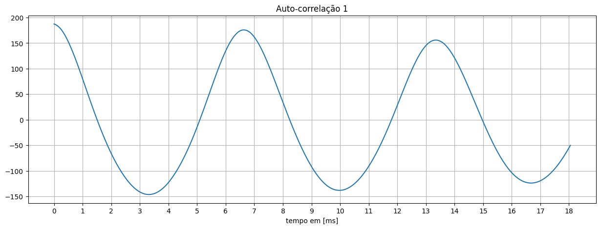

Audiometria Fone Envolvente: Realizar o teste de audiometria com fone envolvente, traz uma vantagem de ser mais blindado contra ruídos externos. Dessa forma nota-se que o resultado foi muito satisfatório, visto que para a faixa de frequência de 1k a 8kHz, já foi possível ouvir o sinal no modo quase silencioso. As frequências mais baixas necessitaram de uma potência maior no som para serem ouvidas. Outro ponto relevante, foi que ouvir com as ambas orelhas ajudou em 5 dos 6 testes a ouvir mais rápido o som.
Audiometria Fone não Envolvente: O fone não envolvente traz o problema de não blindar contra ruídos externos que atrapalham bastante. É notório que o desempenho para essa situação foi pior do que o primeire teste com fone envolvente e já nesse caso nem mesmo realizando com ambas orelhas, foi visivelmente mais eficaz do que com as orelhas separadas.
Teste de Acuidade Visual: Os resultados no ponto de vista clínico foram positivos, porém eu, Lucas Aperguis, utilizo óculos e possuo astigmatismo, então a utilização do óculos me proporciona uma performance melhor do que se eu realizasse sem o óculos. O teste de acuidade traz 5 etapas: a primeira de acuidade visual, visa detectar pequenos detalhes a partir de pequenas mudanças graduais. O teste de visão contrastada muda gradualmente o contraste da forma observada e é útil por exemplo em visão noturna. O terceiro teste é de cores, que visa detectar possível daltonismo, quadro em que a pessoa possui dificuldade em identificar cores. O quarto teste visa detectar a presença de astigmatismo, que é um defeito na curvatura da córnea e faz os objetos parecem desfocados, e as linhas e contornos não são visualizados com boa definição. Por fim o último teste é de campo de visão, para detectar possíveis problemas no campo de visão periférico como distorções ou falta de imagem.
OI
Seção de PDS da Voz
Objetivos:
Esse Laboratório tem como objetivo gravar e comparar sinais de voz com vários tipos de microfone: dinâmico e capacitivo, além de observar características temporarais importantes no sinal de voz como envoltória de Energia e Pitch e analisar espectrograma e domínio da frequência.
Áudios:
Os áudios em sequência utilizados para os testes foram: Voz falada, Dígitos, e Poema.
Resultados obtidos para voz falada: Obtida a energia e o espectrograma do áudio completo e em seguida o espectro e a autocorrelação para a vogal de "Lu".
Resultados obtidos para dígitos: Obtida a energia e o espectrograma do áudio completo e em seguida o espectro e a autocorrelação para a vogal de "Um".


Resultados obtidos para voz declamada: Obtida a energia e o espectrograma do áudio completo e em seguida o espectro e a autocorrelação para a vogal de "Cam".
A partir do espectrograma é possível analisar a densidade espectral da , ou seja a intensidade do sinal através do tempo. Nos áudios testados, podemos notar que a consoante surda 's', possui uma densidade alta e por uma grande duração, se comparada com demais consoantes (visível ao falar meu nome). Já uma consoante explosiva como o 'p' e 't' são sempre rápidos picos de energia, notado no espectrograma do poema de Camões.
Audiometria Fone Envolvente: Realizar o teste de audiometria com fone envolvente, traz uma vantagem de ser mais blindado contra ruídos externos. Dessa forma nota-se que o resultado foi muito satisfatório, visto que para a faixa de frequência de 1k a 8kHz, já foi possível ouvir o sinal no modo quase silencioso. As frequências mais baixas necessitaram de uma potência maior no som para serem ouvidas. Outro ponto relevante, foi que ouvir com as ambas orelhas ajudou em 5 dos 6 testes a ouvir mais rápido o som.
Audiometria Fone não Envolvente: O fone não envolvente traz o problema de não blindar contra ruídos externos que atrapalham bastante. É notório que o desempenho para essa situação foi pior do que o primeire teste com fone envolvente e já nesse caso nem mesmo realizando com ambas orelhas, foi visivelmente mais eficaz do que com as orelhas separadas.
Teste de Acuidade Visual: Os resultados no ponto de vista clínico foram positivos, porém eu, Lucas Aperguis, utilizo óculos e possuo astigmatismo, então a utilização do óculos me proporciona uma performance melhor do que se eu realizasse sem o óculos. O teste de acuidade traz 5 etapas: a primeira de acuidade visual, visa detectar pequenos detalhes a partir de pequenas mudanças graduais. O teste de visão contrastada muda gradualmente o contraste da forma observada e é útil por exemplo em visão noturna. O terceiro teste é de cores, que visa detectar possível daltonismo, quadro em que a pessoa possui dificuldade em identificar cores. O quarto teste visa detectar a presença de astigmatismo, que é um defeito na curvatura da córnea e faz os objetos parecem desfocados, e as linhas e contornos não são visualizados com boa definição. Por fim o último teste é de campo de visão, para detectar possíveis problemas no campo de visão periférico como distorções ou falta de imagem.
Seção de PDS da Voz
Objetivos:
Esse Laboratório tem como objetivo gravar e comparar sinais de voz com vários tipos de microfone: dinâmico e capacitivo, além de observar características temporarais importantes no sinal de voz como envoltória de Energia e Pitch e analisar espectrograma e domínio da frequência.
Resultados obtidos para voz falada: Obtida a energia e o espectrograma do áudio completo e em seguida o espectro e a autocorrelação para a vogal de "Lu".
Resultados obtidos para dígitos: Obtida a energia e o espectrograma do áudio completo e em seguida o espectro e a autocorrelação para a vogal de "Um".